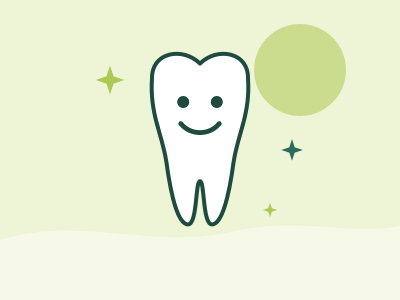

Everyday care
Children’s dentistry
A good experience early on shapes how children feel about the dentist for life. We keep visits calm, friendly and unhurried.
Mon to Sat from 8 am, closed Sunday

Why baby teeth matter
Baby teeth help children chew, speak clearly and hold space for adult teeth. Decay in baby teeth can cause pain and infection, and can affect the adult teeth developing underneath.
Regular visits let your dentist check how teeth and jaws are developing, apply preventive care where it helps, and give you practical advice for brushing and diet at each age.
Signs to book a visit
- White, brown or dark spots on the teeth
- Your child complains of toothache or avoids chewing on one side
- Swollen or bleeding gums
- A knock to the mouth, even if the tooth looks fine
- Questions about thumb sucking, dummies or teeth coming through
Free kids dentistry for eligible children
Eligibility conditions apply, so call reception before the visit and we’ll check for you.
Helping your child feel ready
A few simple things that make the first visit easier.
Keep it low-key
Talk about the visit in a matter-of-fact way. Words like “hurt” or “needle” can plant worries that weren’t there.
Pick a good time
Morning appointments often suit younger children, when they’re rested and fed.
Come along together
Children can watch a parent or sibling have a check-up first, so they know what to expect.
Tell us about worries
Let reception know if your child is nervous or has had a tough experience before.
Caring for your child’s teeth at home
Always follow the instructions your dentist gives you for your own treatment.

- BrushingBrush twice a day with a soft, small-headed brush. Supervise brushing until your child can do it well, usually around 7 or 8.
- ToothpasteWater only from the first tooth to 18 months unless advised otherwise; low-fluoride children’s toothpaste from 18 months to 6 years; standard fluoride toothpaste from 6 years. Use a pea-sized amount.
- Drinks and snacksWater is the best drink. Avoid putting children to bed with a bottle of milk or juice, and keep sweet snacks to mealtimes.
- SportIf your child plays contact sport, ask about a custom mouthguard.
Cost and payment
Fees
We accept eligible patients under the Child Dental Benefits Schedule (CDBS). Eligibility for free kids dentistry and for the CDBS depends on current rules, so call reception and we’ll explain what applies. Fees are always explained before treatment begins.
Health funds
With private health insurance extras cover, your fund may contribute. See our payment options
Questions about children’s dentistry
When should my child first visit?
Australian guidance suggests when the first teeth come through, or by around 12 months of age.
What is the Child Dental Benefits Schedule?
An Australian Government program that helps eligible families with the cost of some basic dental services for children. Eligibility depends on age and on certain government payments, and benefits are capped. Check with Services Australia.
My child is scared. What should I do?
Let us know when you book. Keep your own language calm and matter-of-fact, and let your child watch someone else in the family have a check-up first if that helps.
Ready to book?
Book online or call our Edmonton reception team. Not sure what you need? Book a consultation and your dentist will talk you through the options.
Ask a question about children’s dentistryRelated treatments
Not sure which one you need? Your dentist will talk you through the options at your appointment.